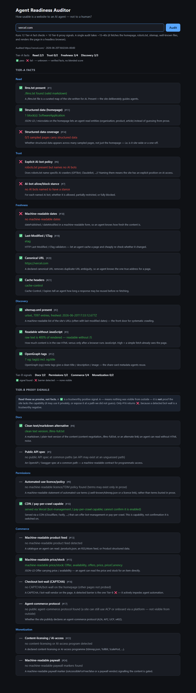

How usable is a website to an AI agent — not to a human?
This opens a pre-filled GitHub issue with your URL — the audit runs in CI and the result is posted back. Want instant results? Run it locally in one command (below); the live in-browser version can't run here because GitHub Pages is static (no server, no headless browser).

✅ pass · ❌ fail · — unknown. Tier-A are verified facts; Tier-B are proxy signals (a ✅ is trustworthy, a — is not proof of absence). No blended score.
Clone the repo, then either the CLI or the local web UI:
git clone https://github.com/az9713/agent-readiness-auditor cd agent-readiness-auditor pip install -r requirements.txt python -m playwright install chromium # command line: python agent_audit.py vercel.com # or the web UI (same page as the screenshot, fully interactive): python webapp.py # then open http://127.0.0.1:8000